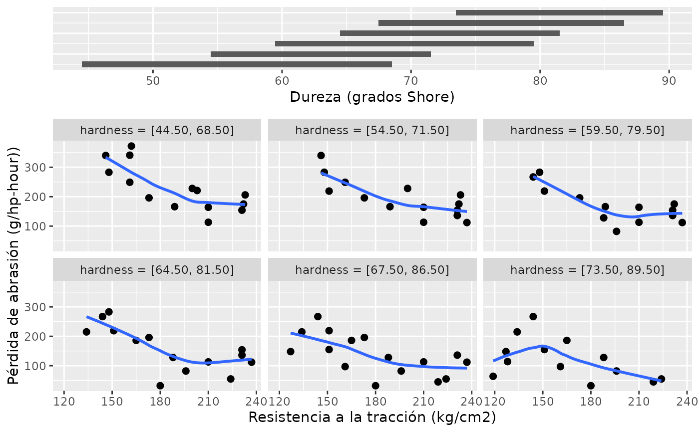

Implements conditional plots or coplots.
gg_coplot( df, x, y, faceting, number_bins = 6, overlap = 0.5, loess = TRUE, loess_span = 3/4, loess_degree = 1, loess_family = "gaussian", ylabel = quo_text(x), xlabel = quo_text(y), facetlabel = quo_text(faceting), show_intervals = TRUE, intervals_height = 0.25, remove_strip = FALSE, facets_nrow = NULL, hline_at = NULL, ... )
| df | dataframe |
|---|---|
| x | numeric variable for x-axis |
| y | numeric variable for y-axis |
| faceting | faceting numeric variable |
| number_bins | integer; the number of conditioning intervals |
| overlap | numeric < 1; the fraction of overlap of the conditioning variables |
| loess | logical; should a loess smoothing curve be added to the coplots? Defaults to TRUE. |
| loess_span | span parameter for loess |
| loess_degree | degree parameter for loess |
| loess_family | famiyly argument for the loess() function |
| ylabel | label for y-axis |
| xlabel | label for x-axis |
| facetlabel | label for faceting variable |
| show_intervals | logical; should the overlapping intervals be shown on their own panel on the top of the figure? Defaults to TRUE. |
| intervals_height | numeric between 0 and 1, relative size of the intervals pane |
| remove_strip | logical; should de facets have no strips with labels? Default to FALSE. |
| facets_nrow | integer; number of rows for the facets |
| hline_at | numeric; if provide a horizontal line will be added at that heigth |
| ... | addtional parameters passed to geom_point() |
a coplot
data(rubber) gg_coplot(rubber, x = tensile.strength, y = abrasion.loss, faceting = hardness, number_bins = 6, overlap = 3/4, ylabel = "Pérdida de abrasión (g/hp-hour))", xlabel = "Resistencia a la tracción (kg/cm2)", facetlabel = "Dureza (grados Shore)", loess_family = "symmetric", size = 2)